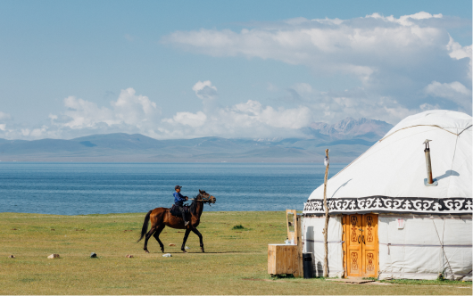
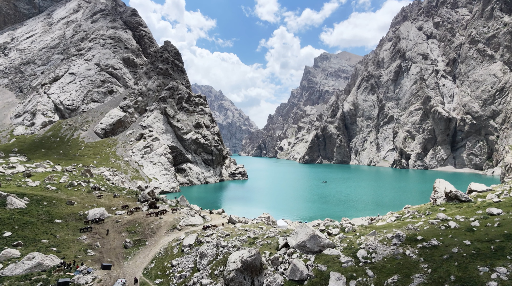
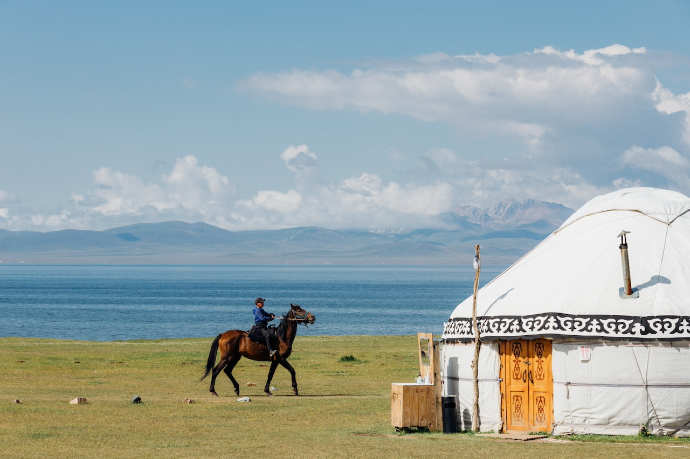
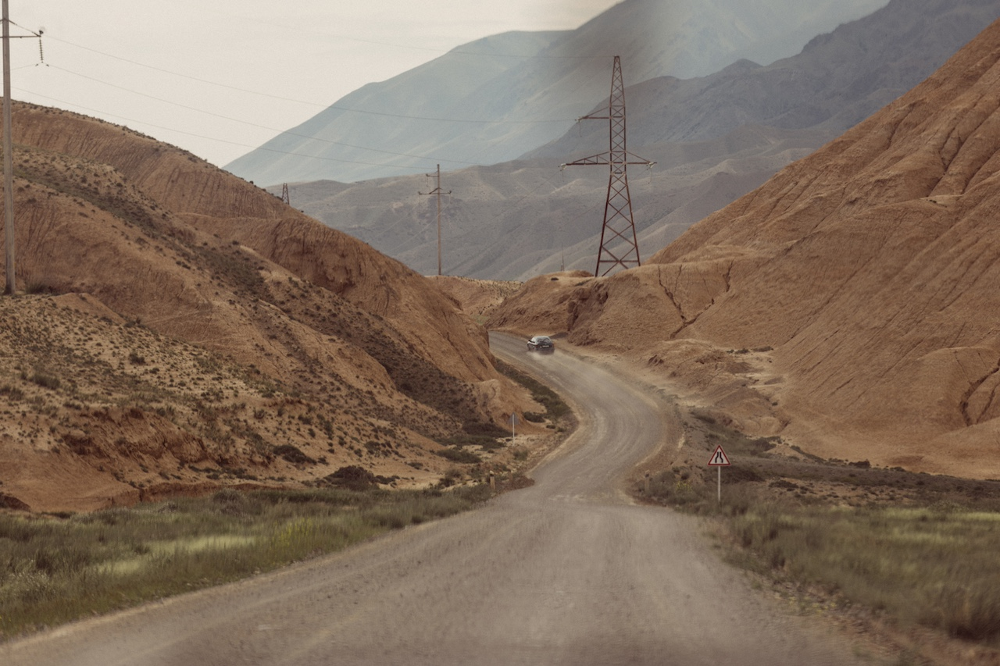
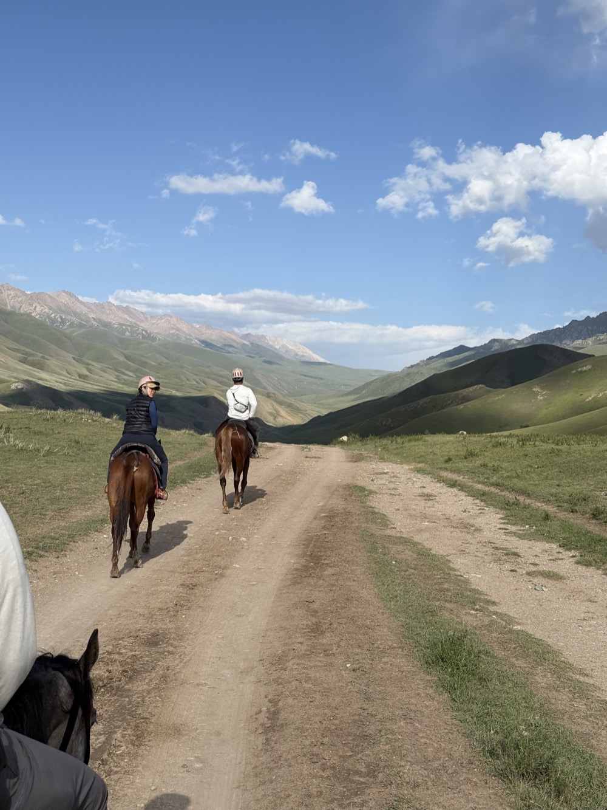
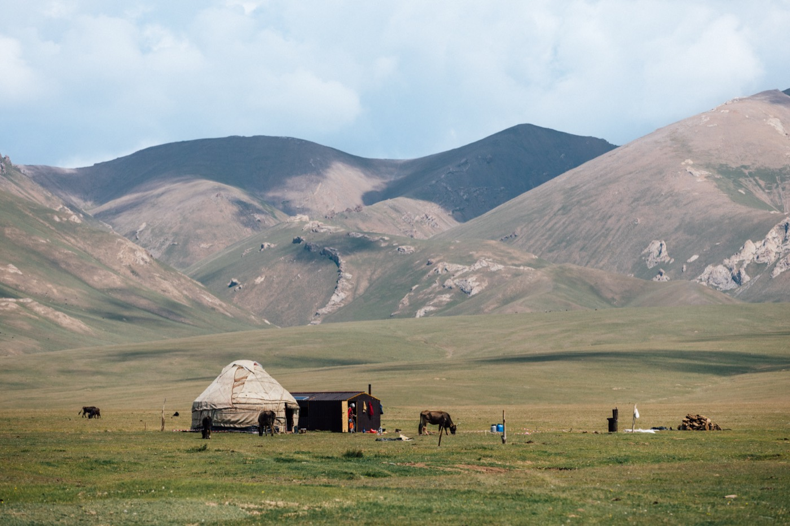
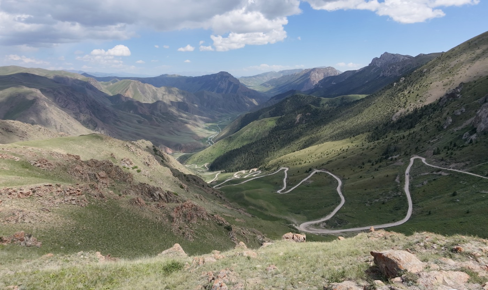
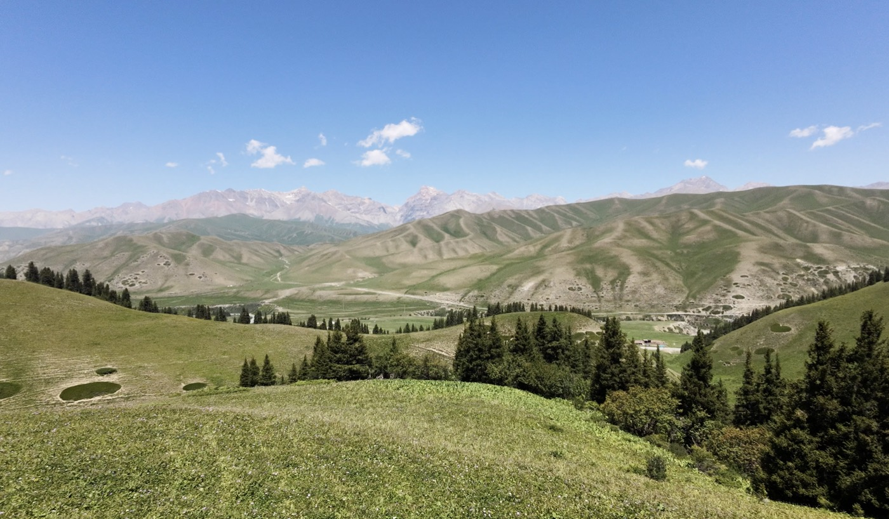
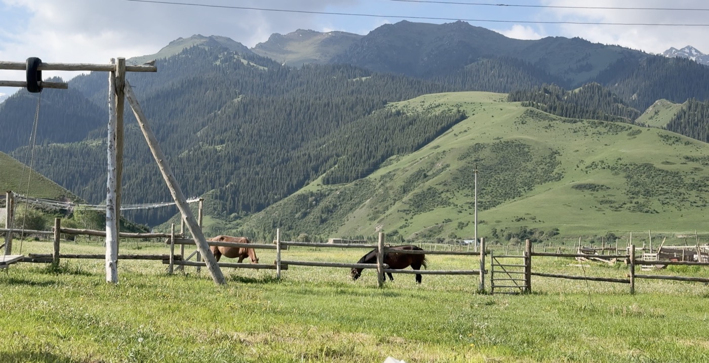
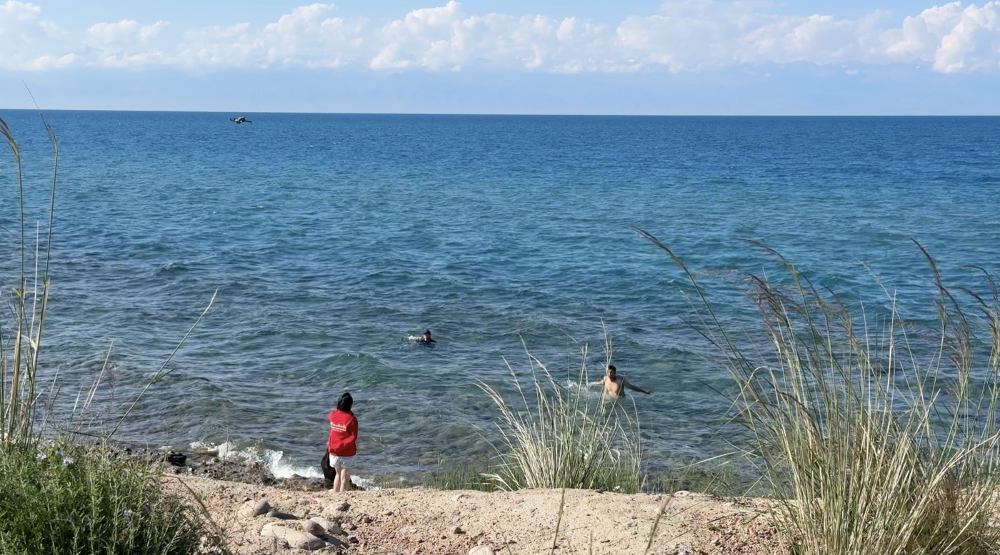

騎馬前往頌湖
騎馬兩天翻越 Jalgyz-Karagai 山口（3,400 m），抵達湖畔的氈房。
你會騎馬兩天翻越 3,400 公尺的山口前往頌湖，與遊牧家庭度過悠閒的一天，再深入偏遠的邊境高原，前往被陡峭峽谷環繞的克蘇湖（Kel-Suu）。一路上住在氈房營地和民宿，分享家常菜，遇見金雕獵鷹人，並學習氈房如何搭建。
請準備好面對真實的山區條件：騎馬、越野路段、高海拔、寒冷的夜晚，以及有幾天沒有淋浴或手機訊號。換來的，是很少旅人能看到的吉爾吉斯。

騎馬兩天翻越 Jalgyz-Karagai 山口（3,400 m），抵達湖畔的氈房。

陡峭峽谷間的碧綠湖泊，騎馬和搭船探索。

拜訪遊牧家庭、製作羊毛氈地毯（shyrdak）、搭建氈房，以及金雕獵鷹人。
這不是輕鬆的行程，但如果適合你，它會是你人生中最有收穫的旅程之一。每一天都不同，事先知道會遇到什麼，旅程會更愉快。
每位旅人都請親自閱讀，不只是幫朋友或家人安排行程的那一位。預訂前也請詳讀完整的每日行程。
3–4 晚氈房營地（Kilemche、頌湖北岸與南岸，可能還有 Bokonbaevo 的現代氈房住宿），有時是豪華帳篷。2 晚簡易木屋在 Kok-Kiya。3–4 晚民宿與飯店。有些營地很安靜，有些則可能有不少其他旅客。
騎馬期間連續 2 天沒有淋浴（第 2–3 天）。有些山區營地只有簡易的共用淋浴。這兩段前後，你都可以在民宿和飯店洗熱水澡。
在山區營地，廁所很簡單，與其他旅客共用，通常在戶外。有些民宿的衛浴也可能是共用的。
第 2 天沒有 Wi-Fi 和手機訊號。其他地方的 Wi-Fi 和訊號也常常很弱或很慢，請不要期待視訊通話或上傳照片。山區充電有限，請攜帶行動電源。
包含所有餐食。山上沒有菜單：氈房營地和家庭準備什麼，我們就吃什麼，是簡單家常的吉爾吉斯料理。如有飲食需求（素食、不吃羊肉、過敏），請在預訂時告訴我們。
晴天、下雨、颳風，甚至夏天高山山口也可能下雪。白天可能溫暖，但 3,000 公尺以上的夜晚非常冷。為了安全，導遊可能會調整或替換活動。
有幾天車程約 4–5.5 小時，部分是顛簸的越野山路。雖然累，但會帶你到很少旅人能抵達的地方。
大部分行程在海拔 2,500 到 3,500 公尺之間。大多數人都能適應，但有些人會頭痛或疲倦。如有心臟、肺部或其他健康狀況，請在預訂前告訴我們。
不需要經驗，但要能接受第 2 和第 3 天每天騎馬約 4 小時，以及第 7 天往返克蘇湖約 4 小時。在地馬伕會陪你一起騎，我們會為每位騎士挑選合適的馬。
必須投保涵蓋騎馬、高海拔與緊急後送的旅遊保險。
克蘇湖位於邊境管制區，我們需要事先取得你的護照資料來申請通行證。請在我們告知的期限內提供。
| 天 | 住宿 | 淋浴 | 廁所 | Wi-Fi / 訊號 |
|---|---|---|---|---|
| 第 1 天 | 村莊民宿，Kyzart | 有，在另一棟建築 | — | Wi-Fi |
| 第 2 天 | Kilemche 山谷吉爾吉斯包營地 | 無 | 戶外，共用 | 無 |
| 第 3 天 | 氈房 / 豪華帳篷，頌湖北岸 | 無 | 戶外，共用 | Wi-Fi 很弱，無訊號 |
| 第 4 天 | 氈房營地，頌湖南岸 | 共用 | 戶外，共用 | — |
| 第 5 天 | 納倫四星級飯店 | 私人，熱水 | 私人 | Wi-Fi |
| 第 6 天 | 木屋，Kok-Kiya | 只有桑拿（banya） | 戶外，共用 | Wi-Fi 很弱，無訊號 |
| 第 7 天 | 木屋，Kok-Kiya | 只有桑拿（banya） | 戶外，共用 | Wi-Fi 很弱，無訊號 |
| 第 8 天 | 民宿，Tash-Bashat | 私人 | 私人 | Wi-Fi |
| 第 9 天 | 舒適的現代氈房住宿或民宿，Bokonbaevo | 共用 | 共用 | Wi-Fi |
| 第 10 天 | DUO 飯店，比什凱克 | 私人 | 私人 | Wi-Fi |

沒有塞車，沒有通知，沒有匆忙。只有開闊的山谷、新鮮的山間空氣，和風吹過草地的聲音。騎馬穿過安靜的牧場，坐在平靜的高山湖畔，傍晚在氈房裡喝茶，看著餘暉從山峰上褪去。夜裡安靜到能聽見屋外馬兒吃草的聲音。
許多旅人說，這是他們多年來第一次真正放下一切。
如果你想暫時遠離噪音、螢幕和行程表，吉爾吉斯的群山正在等你。

比什凱克 → 布拉納塔 → Kyzart
旅程從比什凱克向東出發，前往布拉納塔——這座 11 世紀的宣禮塔孤立在楚河谷，周圍是被稱為 balbal 的古老石人。導遊會講述曾經矗立在這裡的絲路古城故事。午餐是在地人最愛的千層餅（kattama），在路邊的家庭咖啡館現烤，配湯和茶。下午公路爬進天山山脈，在 Kyz-Art 山口停留，第一次看到遼闊的山景。抵達通往頌湖的傳統門戶 Kyzart，在村子散步，享用家常晚餐。晚餐時導遊會為接下來的騎馬行程做說明。

Kyzart → Kilemche 山谷
早餐後與你的馬，以及接下來兩天陪你一起騎的在地馬伕見面。出發前導遊會仔細做安全說明，幫你在馬鞍上坐穩。接著開始騎行：約四小時穿越起伏的夏牧場，途中定時休息、欣賞風景。中午抵達遼闊的 Kilemche 山谷——牧民夏天會把牲畜帶到這裡，在小型氈房營地吃午餐。下午自由休息、在山谷散步，或享受寧靜。夕陽散步後，在氈房享用晚餐，度過滿天星斗的一夜。
小提醒
你的主要行李會另外由車子送到頌湖，第 3 天和你會合。今晚請準備一個小過夜包，放保暖衣物、盥洗用品和行動電源。提供頭盔和騎馬手套。
Kilemche → Jalgyz-Karagai 山口 → 頌湖
今天是騎行的高潮。趁著山間空氣還靜、光線柔和時早早出發，慢慢騎上海拔 3,400 公尺的 Jalgyz-Karagai 山口。從山頂望去，整片高原在腳下展開，你第一次看見遠方閃閃發光的頌湖。拍照、吃點東西後，穿過寬闊的草甸下山，到湖北岸的氈房營地，你的行李已經在那裡等你。午餐在營地享用，下午可以休息、沿湖岸散步，或和旅伴玩桌遊。傍晚湖面染成金色，晚餐後，海拔 3,000 公尺的夜空令人難忘。
小提醒
即使在夏天，山口也又冷又多風，請在隨身包裡準備保暖外套、手套和雨衣。下山最陡的路段，可以下馬牽著走。如果山口下雪或有暴風雨，為了安全，導遊可能會改成開車送你到頌湖。

頌湖北岸 → 遊牧家庭 → 頌湖南岸
今天不用趕。早起的話，早餐前可以看湖上的日出。接著開車穿越開闊的草原，拜訪一戶夏天住在頌湖畔的遊牧家庭。他們會在氈房裡招待你午餐，下午了解他們的生活方式：如何照顧馬匹、做馬奶酒（kymyz）和新鮮乳製品，以及如何在海拔 3,000 公尺度過夏天。之後沿著湖岸開往南岸的氈房營地，途中停下來拍照。晚餐前可以自由去看夕陽。
小提醒
和家庭的活動取決於季節和他們的日常工作，所以每次拜訪都有些不同。進氈房請脫鞋，拍攝家人前請先詢問。

頌湖 →「32 鸚鵡彎」→ 納倫
在湖邊度過最後一個早晨後，經由著名的「32 鸚鵡彎」離開頌湖。這條路因為有許多髮夾彎而得名，先在上方停留拍照，接著沿著山坡蜿蜒而下，非常壯觀。往下走，風景逐漸變化，來到納倫河畔的山城納倫。中午抵達吃午餐，然後入住舒適的飯店，熱水澡和真正的床正在等你。下午完全自由：休息、洗衣服，或去咖啡館。晚餐在飯店，導遊也會為接下來兩天的偏遠克蘇湖地區做說明。
小提醒
納倫是進入克蘇湖地區前最後一個可以提款、去藥局和把手機充滿電的地方。許多旅人會利用下午的自由時間洗衣服。

納倫 → Bosogo 峽谷 → Kyndy 山口 → Kok-Kiya 山谷
早上先逛納倫的在地市集，幫忙挑選今天野餐要吃的新鮮麵包、水果和蔬菜。接著往南，駛進吉爾吉斯最偏遠的地區之一。在 Bosogo 峽谷下車，往山裡健行 1.5 小時，再在峽谷裡野餐。下午繼續翻越 Kyndy 山口，在這裡檢查護照和邊境通行證，然後進入寬闊寧靜的 Kok-Kiya 山谷。抵達一個小型山區營地，這是接下來兩晚的基地，晚餐前有時間安頓下來，在傳統吉爾吉斯桑拿（banya）裡暖暖身子。
小提醒
這一區是邊境管制區，請把護照帶在身上，不要放在主要行李裡。越野路段很顛簸，如果會暈車，請告訴導遊讓你坐前座。如果天氣不好，健行會改成在峽谷裡短程散步。
Kok-Kiya → 克蘇湖 → Kok-Kiya
今天你將探訪吉爾吉斯最隱密的地方之一。早餐後，和在地馬伕一起騎馬約兩小時穿過山谷，抵達克蘇湖——一座在陡峭峽谷之間延伸的碧綠湖泊。接著搭船深入湖中，天氣允許的話，還會上岸短程健行到湖面上方的洞穴。午餐視天氣，在湖邊野餐或回營地吃熱食。下午自由休息、看書，或放鬆一下。
小提醒
即使在夏天，湖邊也又冷又多風，請帶保暖外套、帽子和手套。洞穴健行需要抓地力好的鞋子。天氣不好時，遊船只在水上不靠岸，午餐改在營地。

Kok-Kiya → 納倫 → Tash-Bashat
在 Kok-Kiya 的寧靜中度過最後一個早晨後，翻越 Kyndy 山口往納倫方向返回，途中停下來拍照。午餐在納倫的餐廳，從山上下來後換換口味。下午開一小段車到安靜的 Tash-Bashat 村，民宿以熱水澡和休息時間歡迎你。下午其餘時間自由放鬆，或在村子裡輕鬆散步，晚上和主人家一起享用家常晚餐。
小提醒
離開邊境管制區時會再次檢查護照，請把護照帶在身上。
Tash-Bashat → Kochkor → Kyzyl-Tuu → Bokonbaevo
今天專注在遊牧民族的工藝與傳統。在 Kochkor，當地工坊的婦女會示範如何手工製作色彩繽紛的吉爾吉斯羊毛氈地毯（shyrdak），這是代代相傳的手藝。在 Kochkor 吃完午餐後，驅車前往伊塞克湖南岸拜訪氈房工匠。當地家庭會示範氈房如何搭建，你也可以一起動手。傍晚與鷹獵人（berkutchi）相遇，看他的金雕進行狩獵示範。晚上在他家繼續欣賞民族音樂表演，並和他的家人共進告別晚餐。
小提醒
這是全程最忙碌的一天，有三個文化參訪。拍攝金雕特寫前請先詢問，並在金雕旁遵照獵人的指示。

Bokonbaevo → Balykchy → Kok-Moinok → 比什凱克
最後一個早晨悠閒而寧靜。可以沿著伊塞克湖畔散步，天氣暖的話去游泳，或只是坐在水邊。中午沿著湖岸開到 Balykchy 吃午餐。下午在 Kok-Moinok 停留——這是一片隱藏的紅色與橙色峽谷，在岩石間輕鬆散步約 50 分鐘。接著返回比什凱克，入住飯店，晚上在市區餐廳享用告別晚餐，為旅程畫下句點。
小提醒
大約 19:00 抵達比什凱克。如果你當天晚上要搭飛機，請在預訂時告訴我們。我們會跳過 Kok-Moinok，讓你大約 17:30 提早抵達比什凱克。
在旅途中，你可能會品嚐到以下經典料理：

手切麵佐清燉肉。最具代表性的吉爾吉斯料理，象徵節慶與款待。

炒羊肉／牛肉，搭配馬鈴薯與洋蔥，是遊牧人的家常菜。

用胡蘿蔔、肉、米飯燉煮而成，香氣濃郁。

手工拉麵加入蔬菜與牛肉，是中亞常見的麵食。

以傳統土窯烘烤，外酥內多汁。

露天炭烤，是旅途中最常見的香味。